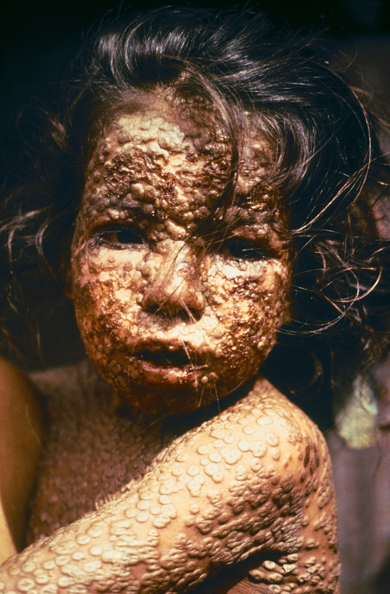

El mundo declara extinguida la viruela, primera peste vencida por el hombre
Los delegados de todas las naciones aprobaron hoy en Ginebra la declaración que certifica la desaparición de la enfermedad en toda la Tierra. El último caso natural se registró en Somalia hace tres años. Solo en este siglo, el mal se había cobrado trescientos millones de vidas.

En el Palacio de las Naciones, los delegados de la trigésima tercera Asamblea Mundial de la Salud aprobaron hoy, solemnemente y por aclamación, una declaración sin precedentes en la historia de la medicina: la viruela ha sido erradicada de la faz de la Tierra. El texto proclama que el mundo y todos sus pueblos han conquistado la libertad frente a la enfermedad, y rinde homenaje a las naciones que hicieron posible la empresa común. Por primera vez desde que existe memoria escrita, una peste que acompañó al hombre durante milenios, desfigurando y matando por igual a reyes y a mendigos, deja oficialmente de existir sobre el planeta.
La certificación corona una campaña mundial iniciada en 1967, cuando la enfermedad todavía se cebaba en más de treinta países. Millares de vacunadores recorrieron desiertos, selvas y aldeas sin caminos, con una estrategia de cerco: detectar cada caso, aislarlo y vacunar a todos a su alrededor. El último enfermo por contagio natural fue Ali Maow Maalin, un cocinero de hospital de la ciudad somalí de Merca, en octubre de 1977; sanó, y desde entonces comisiones internacionales recorrieron el planeta durante más de dos años buscando en vano un solo caso nuevo. No lo hallaron, y por eso hoy pudieron firmarlo con la conciencia tranquila.
Cuesta abarcar lo que hoy termina. Solo en este siglo, la viruela mató a unos trescientos millones de seres humanos, más que todas las guerras juntas; a los sobrevivientes solía dejarles el rostro marcado o los ojos ciegos. Diezmó imperios enteros en América tras la conquista, vació ciudades europeas, y hasta hace pocos años seguía cobrándose millones de vidas en Asia y en África. Contra ella se ensayaron rezos, sangrías y cordones sanitarios; solo la vacuna pudo domarla, y solo la vacunación de la humanidad entera, sin distinción de banderas ni de regímenes, pudo por fin exterminarla.
En la sala hubo lágrimas entre los médicos veteranos de la campaña, hombres y mujeres que dejaron años de su vida en las aldeas del Ganges o del Cuerno de África, y los delegados firmaron un pergamino que quedará como acta de la victoria. Este diario siente que cierra hoy una crónica abierta hace mucho: la campaña que empezó un médico rural inglés cuando ensayó en 1796 la vacuna contra la viruela, y que estas páginas contaron en su día, termina esta mañana en Ginebra. Entre Jenner y Maalin median menos de dos siglos: lo que tarda una idea buena en dar la vuelta al mundo entero.
El diario quiere pesar bien las palabras, porque la ocasión no admite triunfalismos baratos: no se ha ganado una guerra contra hombres, sino la primera guerra de todos los hombres juntos contra un enemigo común. Naciones que se recelan en todos los foros trabajaron codo a codo en esta campaña, y el resultado está a la vista: donde hubo voluntad compartida, ni siquiera la peste más antigua pudo resistir. Quedan otros males, y son legión. Pero desde hoy la humanidad sabe algo que no sabía: que puede, cuando quiere, borrar una enfermedad del mundo. Ojalá no olvide pronto la lección aprendida.